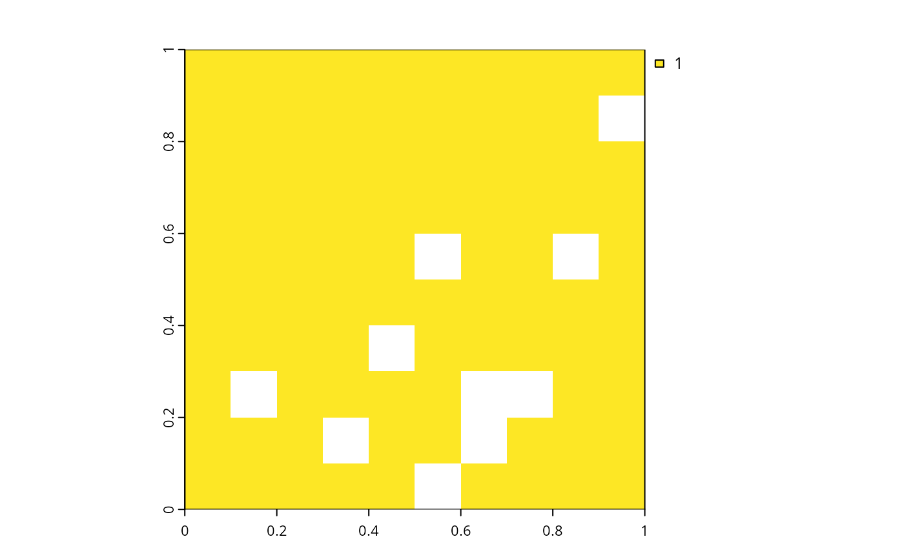

Calculate the total abundance of each feature found in the planning units of a conservation planning problem.
feature_abundances(x, na.rm) # S3 method for ConservationProblem feature_abundances(x, na.rm = FALSE)
| x |
|
|---|---|
| na.rm |
|
tibble containing the total amount
("absolute_abundance") and proportion ("relative_abundance")
of the distribution of each feature in the planning units. Here, each
row contains data that pertain to a specific feature in a specific
management zone (if multiple zones are present). This object
contains the following columns:
character name of the feature.
character name of the zone (not included when the
argument to x contains only one management zone).
numeric amount of each feature in the
planning units. If the problem contains multiple zones, then this
column shows how well each feature is represented in a each
zone.
numeric proportion of the feature's
distribution in the planning units. If the argument to na.rm is
FALSE, then this column will only contain values equal to one.
Otherwise, if the argument to na.rm is TRUE and planning
units with NA cost data contain non-zero amounts of each feature,
then this column will contain values between zero and one.
Planning units can have cost data with finite values
(e.g. 0.1, 3, 100) and NA values. This functionality is provided so
that locations which are not available for protected area acquisition can
be included when calculating targets for conservation features
(e.g. when targets are specified using add_relative_targets).
If the total amount of each feature in all the planning units is
required---including the planning units with NA cost data---then the
the na.rm argument should be set to FALSE. However, if
the planning units with NA cost data should be
excluded---for instance, to calculate the highest feasible targets for
each feature---then the na.rm argument should be set to
TRUE.
problem, feature_representation.
# load data data(sim_pu_raster, sim_features) # create a simple conservation planning data set so we can see exactly # how the feature abundances are calculated pu <- data.frame(id = seq_len(10), cost = c(0.2, NA, runif(8)), spp1 = runif(10), spp2 = c(rpois(9, 4), NA)) # create problem p1 <- problem(pu, c("spp1", "spp2"), cost_column = "cost") # calculate feature abundances; including planning units with \code{NA} costs a1 <- feature_abundances(p1, na.rm = FALSE) # (default) print(a1)#> # A tibble: 2 x 3 #> feature absolute_abundance relative_abundance #> <chr> <dbl> <dbl> #> 1 spp1 5.75 1 #> 2 spp2 43 1# calculate feature abundances; excluding planning units with \code{NA} costs a2 <- feature_abundances(p1, na.rm = TRUE) print(a2)#> # A tibble: 2 x 3 #> feature absolute_abundance relative_abundance #> <chr> <dbl> <dbl> #> 1 spp1 4.87 0.848 #> 2 spp2 40 0.930# verify correctness of feature abundance calculations all.equal(a1$absolute_abundance, c(sum(pu$spp1), sum(pu$spp2, na.rm = TRUE)))#> [1] TRUEall.equal(a1$relative_abundance, c(sum(pu$spp1) / sum(pu$spp1), sum(pu$spp2, na.rm = TRUE) / sum(pu$spp2, na.rm = TRUE)))#> [1] TRUEall.equal(a2$absolute_abundance, c(sum(pu$spp1[!is.na(pu$cost)]), sum(pu$spp2[!is.na(pu$cost)], na.rm = TRUE)))#> [1] TRUEall.equal(a2$relative_abundance, c(sum(pu$spp1[!is.na(pu$cost)]) / sum(pu$spp1, na.rm = TRUE), sum(pu$spp2[!is.na(pu$cost)], na.rm = TRUE) / sum(pu$spp2, na.rm = TRUE)))#> [1] TRUE# initialize conservation problem with raster data p3 <- problem(sim_pu_raster, sim_features) # calculate feature abundances; including planning units with \code{NA} costs a3 <- feature_abundances(p3, na.rm = FALSE) # (default) print(a3)#> # A tibble: 5 x 3 #> feature absolute_abundance relative_abundance #> <chr> <dbl> <dbl> #> 1 layer.1 83.3 1 #> 2 layer.2 31.2 1 #> 3 layer.3 72.0 1 #> 4 layer.4 42.7 1 #> 5 layer.5 56.7 1# create problem using total amounts of features in all the planning units # (including units with NA cost data) p4 <- p3 %>% add_min_set_objective() %>% add_relative_targets(a3$relative_abundance) %>% add_binary_decisions() # attempt to solve the problem, but we will see that this problem is # infeasible because the targets cannot be met using only the planning units # with finite cost datas4 <- try(solve(p4))#> Optimize a model with 5 rows, 90 columns and 450 nonzeros #> Variable types: 0 continuous, 90 integer (90 binary) #> Coefficient statistics: #> Matrix range [2e-01, 9e-01] #> Objective range [2e+02, 2e+02] #> Bounds range [1e+00, 1e+00] #> RHS range [3e+01, 8e+01] #> Presolve time: 0.00s #> #> Explored 0 nodes (0 simplex iterations) in 0.00 seconds #> Thread count was 1 (of 4 available processors) #> #> Solution count 0 #> #> Model is infeasible #> Best objective -, best bound -, gap -# calculate feature abundances; excluding planning units with \code{NA} costs a5 <- feature_abundances(p3, na.rm = TRUE) print(a5)#> # A tibble: 5 x 3 #> feature absolute_abundance relative_abundance #> <chr> <dbl> <dbl> #> 1 layer.1 74.5 0.895 #> 2 layer.2 28.1 0.900 #> 3 layer.3 64.9 0.902 #> 4 layer.4 38.2 0.895 #> 5 layer.5 50.7 0.893# create problem using total amounts of features in the planning units with # finite cost data p5 <- p3 %>% add_min_set_objective() %>% add_relative_targets(a5$relative_abundance) %>% add_binary_decisions()# solve the problem s5 <- solve(p5)#> Optimize a model with 5 rows, 90 columns and 450 nonzeros #> Variable types: 0 continuous, 90 integer (90 binary) #> Coefficient statistics: #> Matrix range [2e-01, 9e-01] #> Objective range [2e+02, 2e+02] #> Bounds range [1e+00, 1e+00] #> RHS range [3e+01, 7e+01] #> Found heuristic solution: objective 18487.196992 #> Presolve removed 5 rows and 90 columns #> Presolve time: 0.00s #> Presolve: All rows and columns removed #> #> Explored 0 nodes (0 simplex iterations) in 0.00 seconds #> Thread count was 1 (of 4 available processors) #> #> Solution count 1: 18487.2 #> #> Optimal solution found (tolerance 1.00e-01) #> Best objective 1.848719699208e+04, best bound 1.848719699208e+04, gap 0.0000%# plot the solution # this solution contains all the planning units with finite cost data (i.e. # cost data that do not have NA values) plot(s5)